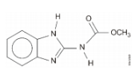
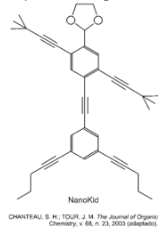
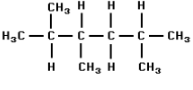
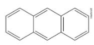
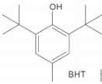

Bem vindo ao Quiz
Funções Orgânicas
Questão 1
Recentemente, os produtores de laranja do Brasil foram surpreendidos com a notícia de que a exportação de suco de laranja para os Estados Unidos poderia ser suspensa por causa da contaminação pelo agrotóxico carbendazim, representado a seguir.

De acordo com a estrutura, afirma-se que o carbendazim possui:
A)fórmula molecular C9H11N3O2 e um carbono terciário.
B)fórmula molecular C9H9N3O2 e sete carbonos secundários.
C)fórmula molecular C9H13N3O2 e três carbonos primários.
D)cinco ligações pi e vinte e quatro ligações sigma.
Questão 2
As moléculas de nanoputians lembram figuras humanas e foram criadas para estimular o interesse de jovens na compreensão da linguagem expressa em fórmulas estruturais, muito usadas em química orgânica. Um exemplo é o NanoKid, representado na figura:

Em que parte do corpo do NanoKid existe carbono quaternário?
A)Cabeça
B)Mãos
C)Tórax
D)Abdomen
Questão 3
Observe a fórmula

As quantidades totais de átomos de carbono primário, secundário e terciário são, respectivamente:
A)5, 2 e 2.
B)3, 2 e 2.
C)5, 1 e 3.
D)2, 3 e 4.
Questão 4
A fórmula estrutural abaixo representa o antraceno, substância importante como matéria-prima para a obtenção de corantes.

Examinando-se essa fórmula, nota-se que o número de átomos de carbono na molécula do antraceno é
A)3
B)14
C)10
D)18
Questão 5
O BHT é um importante antioxidante sintético utilizado na indústria alimentícia. Sobre o BHT é correto afirmar que ele apresenta:

A) 3 carbonos quaternários.
B) fórmula molecular C12H21O
C) 2 carbonos quaternários.
D) 3 carbonos com hibridação sp2